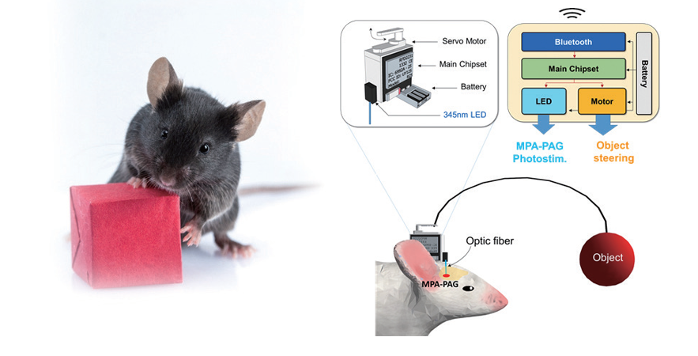

KAIST Top 10
KAIST Top 10
KAIST RESEARCH ACHIEVEMENTS
Medial Preoptic Area Induces Hunting-like Behaviors to Target Objects and Prey
Department of Biological Sciences Daesoo Kim
Summary
Animals continuously search for and acquire useful resources for their survival. It has been unknown as to how the brain yields this motivation and orchestrates related behaviors. Researchers at KAIST revealed that a specific group of neurons in the medial preoptic area (MPA) mediates hunting-like behavior to acquire target objects and prey. Photostimulation of these neurons induces chasing, holding, biting, and retrieving target objects and prey. Inhibition of the neurons decreases the interest of mice towards targets. Using this phenomenon, researchers developed a new technology called MIDAS (MPA-induced drive assisted steering) and applied it to control the behavior of mice. The MIDAS mice navigated pathways along a programmed route in a complex maze while avoiding obstacles. The findings and the developed technology will be useful for the understanding and modulating of foraging behaviors and related human phenomena and disorders such as object hoarding disorders and shopping addictions.
Background
Animals repeatedly interact with novel objects to find useful resources, such as food and prey. This object exploration seems to be innate: young animals exhibit preferences and play-like interactions with novel toys, and they do not need to learn how to hold, bite, or retrieve objects from their environment. Identifying the circuits responsible for motivating animals to interact with objects will improve our understanding of how the brain organizes behavior to acquire useful targets during hunting and foraging.
A research group led by Daesoo Kim revealed that a specific group of neurons in the medial preoptic area (MPA) induces hunting-like behavior to acquire target objects. Photostimulation of these neurons induces chasing, holding, biting, and retrieving target toys in mice. When exposed to crickets, these mice showed predatory actions to catch and kill the prey. This finding strongly suggests that the biological meaning of playing with objects is associated with hunting behavior. Inspired by this object-craving mechanism, the researchers developed a new technology called MIDAS (MPA-induced drive assisted steering). During photostimulation of the MPA circuit, mice chased a head-mounted object that was wirelessly swung around in front of the head by a computer program. The MIDAS mice navigated pathways along a programmed route in a complex maze while avoiding obstacles.
 Fig. 1. MIDAS technology to steer animal behavior using object-craving circuit
Expected effect
The findings and the MIDAS technology will be useful for the understanding and modulating of foraging behaviors and related human disorders such as object hoarding disorders and shopping addictions.
Research Outcomes
[Paper 1] Sae-Geun Park, Yong-Cheol Jeong, Dae-Gun Kim, Min-Hyung Lee, Anna Shin, Geunhong Park, Jia Ryoo, Jiso Hong, Seohui Bae, Cheol-Hu Kim, Phill-Seung Lee and Daesoo Kim (2018) Medial preoptic circuit induces hunting-like actions to non-social objects and prey, Nature Neuroscience.
[Patent 1] Park, S and Kim, D et al., PCT/KR2017/001470, Method for controlling behavior of animals using object seeking behavior
[Patent 2] Park, S and Kim, D et al., KR10/2016/0016473, An animal whose behavior can be regulated by light and use thereof
[Press release] Highlighted in INSCPOPIX news (must-read neural circuit papers in Jan, 2018), USA